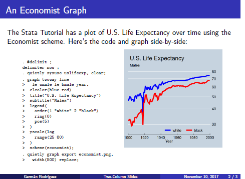

markstat command lets you combine Markdown
annotations with Stata commands to produce dynamic documents and
presentations.
The basic idea is to write Markdown annotations with Stata code indented one tab or four spaces, as in the following script:
% Stata Markdown
Let us read the fuel efficiency data that is shipped with Stata
sysuse auto, clear
To study how fuel efficiency depends on weight it is useful to
transform the dependent variable from "miles per gallon" to
"gallons per 100 miles"
gen gphm = 100/mpg
Let us draw a scatterplot of our transformed measure versus weight
and fit a straight line
twoway scatter gphm weight || lfit gphm weight ///
, ytitle(Gallons per 100 Miles) legend(off)
graph export fuel.png, width(500) replace
{width="4.5in"}
We obtain a more linear relationship than using miles per gallon.
The full script, which also runs a regression, may be found here.
Running the command markstat using auto produces the web page
shown here. The partial screen capture below will
give you an idea of the output:
If you add the option pdf you will produce the PDF document shown
here. If you use the option docx instead, you will obtain
the Word document shown here. All from the same script!
By the way, if you run the code and your graph looks a bit different
from mine, this is because I use the plottig scheme in Stata.
You can also generate dynamic presentations that use the HTML S5 engine,
or produce Beamer slides in PDF format, all written using markstat to
combine Markdown with Stata.
Consider as an example the following slide, that shows Stata code and a graph side by side. This is part of a Beamer deck.

A
Slide in a Two-Column Deck
The complete script generating a two-column presentation with three
slides is available here. You can view the S5 engine
output with the Santiago theme here, and the Beamer
slides using exactly the same script with the beamer(madrid) option
here.
The markstat command was introduced in the Stata Journal, see [G.
Rodríguez (2017) “Literate Data Analysis using Stata and Markdown”,
Stata Journal, Volume 17, Number 3, pp. 600-619]
(https://www.stata-journal.com/article.html?article=pr0067). More
extensive and up-to-date documentation will be found on this website.
The Getting Started section shows how to install
markstat and the required whereis command from SSC. You will also
find download instructions for Pandoc, the document converted used to
handle Markdown, and notes on the requirements for producing PDF via
LaTeX on Windows, Macs and Linux.
The Documentation section expands a bit on the command’s help file. It describes how it works, explains the command syntax, has a short introduction to Markdown, and discusses how to handle mathematical equations, metadata, code blocks and inline code, tables, figures, citations, and presentations.
You will then find a large number of Examples, ranging from the simple script introduced here to a more complex example fitting Cox’s proportional hazards model using Stata and R, with Bootstrap tabs to shift between versions.
Stata 15 introduced support for Markdown and dynamic documents. A
comparison of the official commands with markstat may be found
here.